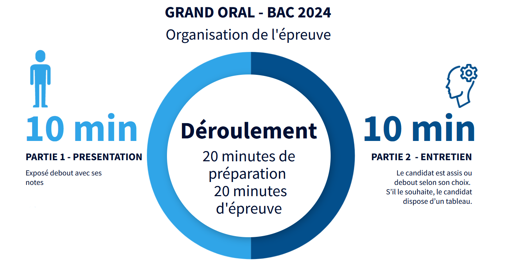
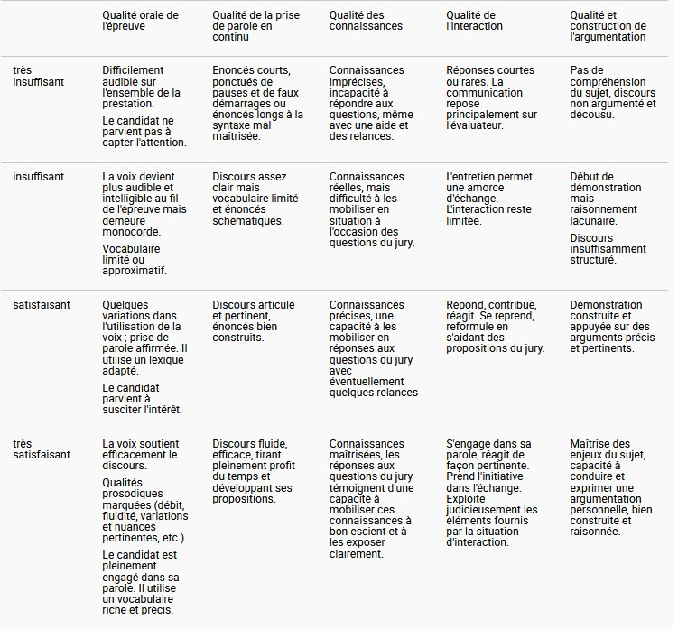

Grand Oral⚓︎
- Texte réglementaire : Lien vers Eduscol
- Complement 2024 : Lien réglementaire
2024
La durée du Grand oral est maintenue à 20 minutes. La troisième partie de l’épreuve, d’une durée de 5 minutes, consistant en un échange sur le projet d’orientation du candidat, est supprimée. Les deux parties restantes de l’épreuve seront désormais d’une durée égale de 10 minutes. Il sera donné au candidat la possibilité d’utiliser un tableau durant le second temps de l’épreuve.


Quelques pistes de travail⚓︎
- L’informatique quantique : une nouvelle révolution technologique
- P = NP
- Informatique dans le cloud
- Peut-on casser tous les codes ?
- Histoires de bug
- Le green-IT
- La sonde persévérance et le binaire
- Comment l’algèbre booléenne a-t-elle permis le développement de l’informatique ?
- Plusieurs questions autour de la cryptographie : un sujet axé sur le HTTPS, un sur l’authentification, un sur quelques grands principes de la crypto.
- Récursivité et récurrence : similarités et différences.
- Bug de rover martien et système d’exploitation multitâche
- Encoder toutes les écritures du monde avec des 1 et des 0
- Comment Mathématiques et Informatiques imitent-elles la nature ? (sujet Math-NSI sur les fractales)
- Comment s’adapter à la cyberguerre ?
- Comment casser le chiffrement de Vigenère (Maths / NSI, l’élève en question y parle de chiffrement à clé puis pour la partie maths, introduit la notion d’indice de coïncidence d’un texte et l’utilise pour expliquer comment trouver la longueur de la clé dans un chiffrement de Vigenère)
- Comment les cryptomonnaies sont-elles sécurisées ?
- Comment l’art de couper en deux permet-il de résoudre des problèmes en mathématiques et informatique (Maths/NSI, sujet autour de la dichotomie, parle de la recherche dichotomique, des algorithmes de dichotomie pour résoudre des équations en maths, voire des arbres binaires de recherche …)
- Les tours de Hanoï , entre récurrence et récursivité (Maths/NSI)
- Comment les caractères de nos claviers sont-ils encodés ?
- Deep Blue, un algorithme imbattable ? (parle d’IA et de bases de données)
- Que se cache-t-il derrière une page web ?
- La suite de Fibonacci, quels algorithmes pour calculer ses termes ? (Maths/NSI)
- Comment les données peuvent elle aider les entreprises à se développer ?
- Comment les systèmes d’exploitation permettent de rendre aisée l’utilisation de notre ordinateur ?
- Comment l’informatique permet-elle de sécuriser les transactions des cryptomonaies ?
- Qu’est-ce qui fait qu’une voiture est autonome ?
- Comment les robots militaires sont-ils contrôlés ?
- Quels sont les impacts de l’obsolescence programmée dans la société ?
- Comment le machine learning a-t-il révolutionné le domaine du médical
- En quoi les IA et les robots ont-ils permit une hausse de production dans les entreprises ?
- Comment l’informatique permet d’améliorer l’aide humanitaire ?
- En quoi les programmes écrits en langage en python permettent-ils d’effectuer des calculs scientifiques complexes ?
- En quoi les bases de données permettent la recherche d’information ?
- En quoi la cryptographie peut-elle optimiser la sécurisation des informations confidentielles ?
- Par quelles mesures la technologie Blockchain va t-elle remplacer les transactions classiques
- En quoi la miniaturisation a permis l’évolution des ordinateurs ?
- Quels sont les impacts de l’avancée des systèmes informatiques sur les emplois ?
- En quoi les bases de données ont permis une évolution de l’organisation du travail ?
- En quoi les nouvelles technologies ont impactés l’engagement politique ?
- De quelle manière sont cryptées les données informatiques ?
- Quel est le role de l’informatique dans la sécurité intérieure ?
- En quoi les bases de données sont-elles importantes dans la prise de décision ?
- Comment améliorer ses performances sportive grâce à l’informatique ?
- La 5G: quels sont ses avantages et ses inconvénients ?
- Comment fonctionne un logiciel de modélisation tridimentionnelle ?
- Quel impact les IA ont elles eu dans le monde des échecs ?
- Quels sont les impacts et la dangerosité des bugs dans notre société ?
- Comment un ordinateur peut-il apprendre de ses erreurs et pourquoi ?
- En quoi la notion de récurrence intervient-elle dans l’élaboration et le fonctionnement d’un programme récursif
- Quelle est l’importance des graphes de nos jours ?
- En quoi le raisonnement par récurrence est-il utile en mathématiques et informatiques ?
- A quoi servent les bases de données ?
- Comment les bases de données ont-elles révolutionné notre quotidien ?
- Pourquoi chiffrer les communications ?
- Comment le cryptage nous permet-il d’utiliser les outils informatiques de manière sûre ?
- Quelles sont les différentes étapes pour parvenir à un site web complet ?
- Quels sont les impacts et la dangerosité des bugs dans notre société
- Comment les transactions des cryptomonnaies sont-elles sécurisées ?
- Comment calculer le coût d’exécution en temps d’un algorithme ?
- Quels sont les les enjeux du cyber espace et quel est le rôle de la cryptologie dans cette nouvelle plateforme ?
- Pourquoi utilise ton les nombres premiers dans l’algorithme RSA ?
- Une IA est elle intelligente ?
- Comment une IA de type LLM construit elle une réponse ? (+math)
- Peut on se fier au résultat d'une IA ?
- Piloter une IA : de nouvelles compétences ?
- Peut on identifier/caractériser la production d'une IA ?
- Les IA : quels enjeux ? (science, geopolitique, économique)
Ou encore un ensemble de sujets compilés par J.-R. Letertre, de l'académie de Nantes*
- Transvers M/NSI Peut-on créer le hasard en informatique ?
- NSI L’arrivée des algorithmes dans le système judiciaire est-elle une bonne chose ?
- NSI Par quel moyen, les entreprises peuvent-elles se protéger des cyber-attaques et quels en sont les conséquences ?
- Transvers M/NSI Comment fonctionnent les algorithmes génétiques ?
- NSI Les bugs : bête noirs des développeurs ?
- Transvers M/NSI Enigma, un codage à toute épreuve ?
- Transvers M/NSI Comment fonctionne la compression de données ?
- NSI Comment les processeurs ont évolué et pourquoi ?
- NSI Comment faire apprendre un robot ?
- Transvers M/NSI Comment optimiser un programme informatique ?
- NSI Pourquoi faire plusieurs langages informatiques différents?
- NSI Comment le son est stocké informatiquement ?
- NSI Turing, père fondateur de l’informatique moderne.
- Transvers M/NSI Tours de Hanoï, un jeu infantile ?
- Transvers M/NSI Comment les cryptomonnaies peuvent révolutionner le système bancaire ?
- Transvers M/NSI Les voitures autonomes, quels enjeux ?
- Transvers M/NSI Les cryptomonnaies seront-elles des outils du monde financier de demain ?
- Transvers M/NSI La puissance de l’informatique a-t-elle une limite ?
- NSI L’IA peut-elle être créative ?
- NSI Informatique Linguistique : Le TAL (Traitement Automatique des Langues) pour parler aux machines ?
- Transvers M/NSI Comment fonctionne un moteur de rendu 3d ?
- NSI Quels sont les différents virus et leurs menaces ?
- Transvers. Maths/NSI Comment représenter un objet 3D en informatique ?
- NSI Comment une Intelligence Artificielle peut-elle apprendre ?
- Transvers. Maths/NSI Comment passe-t-on de la récurrence à la récursivité ?
- NSI Comment l’informatique a t-elle contribué au développement de la création artistique ?
- NSI Que se cache-t-il derrière un site web?
- Transvers. Maths/NSI Comment l’aléatoire fonctionne-t-il ?
- NSI Comment les langages de programmations sont-ils apparus ?
- NSI L’informatique permet elle de faire la différence lors d’une guerre ?
- Transvers. Maths/NSI Où peut-on trouver de l’informatique et des mathématiques dans le cinéma ?
- NSI Les robots peuvent-ils remplacer les humains ?
- NSI Comment les entreprises et associations se diversifient dans leur communication envers leurs clients suite à l’avancée du numérique ?
- Transvers. Maths/NSI Peut-on programmer la 4ème dimension ?
- NSI L’ordinateur quantique est-il le futur du numérique ?
- NSI Faut-il autoriser les voitures entièrement autonomes ?
- NSI Qu’est ce que le bruit de Perlin?
- NSI Comment sécuriser nos mots de passe ?
- NSI L’IA, progrès ou danger pour l’homme ?
- NSI Comment sera le web de demain ?
- NSI L’IA, comment différencier le mythe de la réalité ?
- NSI L’intelligence artificielle peut elle être une menace pour l’Homme ?
- Transvers. Maths/NSI Quel lien existe-t-il entre Fibonacci et les fractales?
- NSI Comment simuler l’aléatoire en informatique?
- Transvers. Maths/NSI Comment a évolué la cryptographie ?
- NSI Qu’appelle-t-on IA ?
- Transvers. Maths/NSI Comment pouvons nous utiliser la génération procédurale en informatique ?
- NSI En quoi l’informatique jouera t-il un rôle majeur dans le divertissement ?
- NSI Quel impact sur le climat ont nos usages du numérique ?
- NSI Dans quel cas faut-il choisir une base de données non relationnelle ou une base de données SQL ?
- NSI/Maths Qu’est-ce que le ray tracing et en quoi relie-t-il les maths et l’informatique ?
- SI/Physique Comment tirer le meilleur d’une installation de panneaux photovoltaïques ?
- NSI Comment un signal sonore est-il numériquement encodé ?
- NSI Comment les réseaux informatiques se sont adaptés au développement d’Internet ?
- NSI Comment les technologies numériques révolutionnent-t-elles le dessin animé / l’animation ?
- Math / NSI Comment peut-on calculer les décimales du nombre π grâce à des algorithmes ?
- NSI Comment décoder du morse grâce à un arbre binaire de recherche ?
- Maths / NSI En quoi simuler l’aléatoire en informatique pose problème ?
- NSI Les données chiffrées peuvent-elles être vraiment indéchiffrables pour un hackeur ?
- Maths/NSI Comment calculer informatiquement les décimales de π ?
- NSI L’intelligence artificielle : un piège vicieux ou un tremplin pour l’humanité ?
- NSI Comment appliquer la récursivité à un arbre de recherche ?
- Maths/NSI Comment une attaque informatique à été créé à partir d’un paradoxe mathématique ?
- NSI Comment l’IA à réussi à battre les humains aux échecs ?
- Maths / Physique Pourquoi les voix de plusieurs chanteurs enrichissent-elles l’harmonie sans multiplier le niveau sonore ?
- NSI Le ramasse miettes, la solution à nos problèmes de mémoire ?
- Maths/NSI Bruit de Perlin, comment dompter l’aléatoire ?
- NSI Comment l’IA fait évoluer la conduite d’un véhicule ?
- NSI Comment a évolué le web pour le rendre plus interactif avec les utilisateurs ?
- Math/NSI Comment l’évolution des chiffrements ont permis de rendre le web plus sûr au fil des années ?
- NSI Comment les IA peuvent-elles aider à la création artistique ?
- NSI Pourquoi le C est-il toujours autant utilisé malgré le fait qu’il ait été développé il y a plus de 50 ans ?
- NSI Comment les entreprises nous ciblent avec des publicités qui correspondent à nos centres d’intérêts ?
- NSI/Maths La puissance de calcul croissante des ordinateurs va-t-elle permettre des avancées majeures dans le domaine des mathématiques ?
- NSI Comment JavaScript a-t-il évolué pour devenir l’un des langages de programmation les plus influents dans le développement web moderne ?
- Math/NSI Comment calculer informatiquement les décimales de π ?
- NSI Comment fonctionne le hacking par injection SQL et quel est l’objectif de cette attaque ?
- NSI Comment l’IA est elle-t-parvenue à battre l’humain dans les différents jeu de stratégie comme dans le jeu d’échecs ?
- NSI Pourquoi l’aléatoire n’existe pas réellement dans l’informatique ?
- NSI Comment l’Intelligence Artificielle fait-elle évoluer la Formule 1?
- NSI Comment et pourquoi générer du hasard est devenu un enjeu technique ?
- Math/NSI Comment les mathématiques protègent vos données numériques ?
- NSI En quoi l’IA devient un outil indispesable en cybersécurité mais aussi une arme redoutable pour les pirates informatique ?
- Maths/NSI Quels sont les avantages et les inconvénients des différents algorithmes de calcul d’une valeur approchée d’une intégrale ?
- NSI Quelle est la nécéssité de faire evoluer l’IA dans les jeux ?